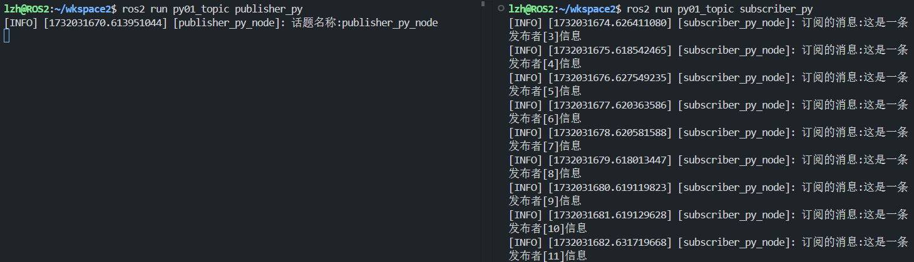
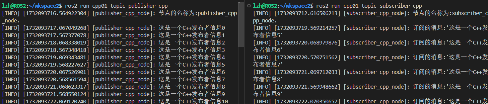
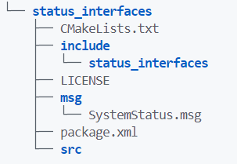
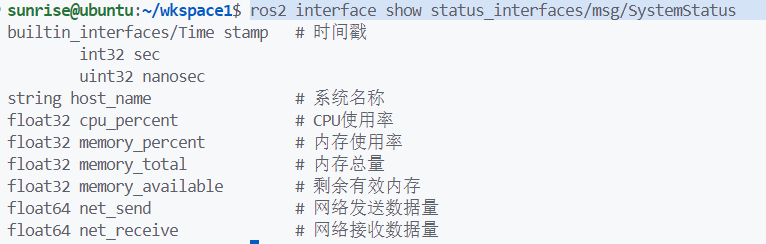
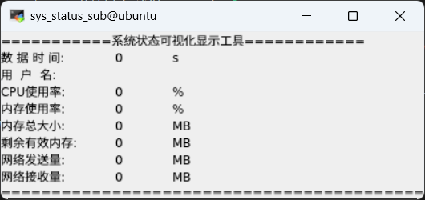
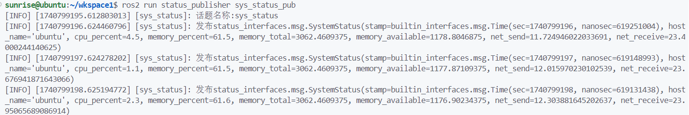
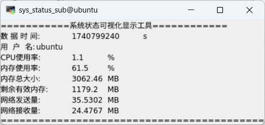

第五章 话题通信¶
话题通信是ROS中使用频率最高的一种通信模式，话题通信是基于 发布订阅 模式的，也即：一个节点发布消息，另一个节点订阅该消息。如下图中，Topic模块的数据流动即是话题通信模型：

节点可以将数据发布到任意数量的话题，同时订阅任意数量的话题。

话题通信的特点：
- 以发布订阅的方式实现不同节点的数据交流，数据发布对象称为 发布者 ，数据订阅对象称之为 订阅者 。
- 发布方将消息发布在话题上，订阅方则从该话题订阅消息，消息的流向是 单向 的。
- 发布方与订阅方可以是 一对多 ，即同一话题一个发布者多个订阅者。
- 同时发布方与订阅方可以是 多对多 ，即同一个话题多个发布者多个订阅者。
话题通信一般应用于不断更新的、少逻辑处理的数据传输场景。
5.1 话题原生消息接口示例¶
5.1.1 案例需求¶
- ROS2原生消息接口：发布方以某个频率发布一段文本，订阅方订阅消息，并输出在终端。
5.1.2 案例分析¶
- 创建发布者
- 创建订阅者
- 选择消息载体（原生数据类型）
- 创建定时器，以一定频率发送消息
5.1.3 功能包准备¶
创建功能包cpp_topic和py_topic，添加 原生消息接口 依赖std_msgs。
ros2 pkg create cpp_topic --build-type ament_cmake --dependencies rclcpp std_msgs --license Apache-2.0
ros2 pkg create py_topic --build-type ament_python --dependencies rclpy std_msgs --license Apache-2.0
5.2 Python原生数据话题示例¶
5.2.1 发布者¶
功能包py_topic的py_topic目录下，新建Python文件publish_py.py
import rclpy
from rclpy.node import Node
from std_msgs.msg import String
class MiniPublisher(Node):
def __init__(self, name):
super().__init__(name)
self.get_logger().info(f"话题名称:{name}")
# 创建发布者
self.publisher1 = self.create_publisher(String, "TopicTest", 10)
# 创建定时器
timer_period = 1
self.timer = self.create_timer(timer_period, self.callback)
self.cg = 0
def callback(self):
"""定时器反馈函数"""
# 创建数据
msg = String()
msg.data = f"这是一条发布者[{self.cg}]信息"
# 发布数据
self.publisher1.publish(msg)
self.cg = self.cg + 1
def main(args=None):
rclpy.init(args=args)
node = MiniPublisher("publisher_py_node")
rclpy.spin(node)
rclpy.shutdown()
if __name__ == "__main__":
main()
5.2.2 订阅者¶
功能包py_topic的py_topic目录下，新建Python文件subscribe_py.py
import rclpy
from rclpy.node import Node
from std_msgs.msg import String
class MinimalSubscriber(Node):
def __init__(self, name):
super().__init__(name)
# 创建订阅方
self.subscription = self.create_subscription(String, "TopicTest", self.listener_callback, 10)
def listener_callback(self, msg):
"""处理订阅到的消息"""
self.get_logger().info(f'订阅的消息:{msg.data}')
def main(args=None):
rclpy.init(args=args)
node = MinimalSubscriber("subscriber_py_node")
rclpy.spin(node)
rclpy.shutdown()
if __name__ == '__main__':
main()
5.2.3 编译运行¶
在setup.py 最后一行添加编译信息
entry_points={
'console_scripts': [
# 添加映射
"publisher_py = py_topic.publish_py:main",
"subscriber_py = py_topic.subscribe_py:main",
],
},
打开第一个终端，运行发布者
打开第二个终端，运行订阅者

由于发布者并没有一直打印日志，故只有一句信息，为订阅者这是订阅到以后就打印一句。
5.3 C++原生数据话题示例¶
5.3.1 发布者¶
由于C++的语法复杂度相较于Python会高很多，所以可以多多参考官方C++API文档
下面是这段代码用到的API：
创建发布者：
rclcpp::Node::create_publisher<MgsT>(
const std::string & topic_name,
const rclcpp::QoS & qos,
const PublisherOptionsWithAllocator< AllocatorT > & options = PublisherOptionsWithAllocator<AllocatorT>()
)
// MgsT是发布者的数据的数据类型
-
std::string & topic_name是指字符串类型的 话题名称- 不允许包含连续的斜杠
//或空格 - 可以用
/分层级 - 例如：
"/robot/camera/image"
- 不允许包含连续的斜杠
-
rclcpp::QoS & qos是质量服务设置- 配置话题的通信行为，影响消息传递的可靠性、延迟和性能
-
参数选择
Qos(10)表示队列深度为 10 的默认 QoS，即 在消息未被接收时最多缓存 10 条信息。QoS(KeepLast(10))表示保留最后 5 条消息的 QoS 策略。QoS(KeepAll())不丢弃任何消息，适用于高可靠性场景。QoS(1).best_effort().volatile()- 队列深度为 1
.best_effort()配置 QoS 为尽力传输模式（Best Effort），允许丢失消息，以降低延迟。.volatile()：配置 QoS 为非持久模式（Volatile），如果新的订阅者在发布器已启动后连接，它不会收到之前的历史消息。
-
自定义QoS 配置
c++ // 自定义QoS 配置 rclcpp::QoS custom_qos(KeepLast(10), rmw_qos_profile_sensor_data); // 使用QoS配置 pub = node->create_publisher<MsgT>("chatter", custom_qos);
rmw_qos_profile_sensor_data使用了传感器数据的预定义 QoS 配置。
- 队列深度为 10
创建定时器：
rclcpp::NOde::create_wall_timer(
std::chrono::duration<DurationRepT, DurationT> period,
CallbackT callback,
rclcpp::CallbackGroup::SharedPtr group = nullptr
)
-
std::chrono::duration<DurationRepT, DurationT> period是 C++ 标准库中用于表示时间间隔的模板类型，其中模板参数DurationRepT和DurationT决定了时间间隔的数值类型和时间单位。-
整数时间间隔：
- 小时单位：
std::chrono::hours - 分钟单位：
std::chrono::minutes - 秒级单位：
std::chrono::seconds - 毫秒级单位：
std::chrono::milliseconds - 微秒级单位：
std::chrono::microseconds - 纳秒级单位：
std::chrono::nanoseconds - 例如
std::chrono::seconds(2)表示 2 秒，其他与此相同
- 小时单位：
-
浮点数时间间隔：
std::chrono::duration<double>(0.5)表示 0.5秒
-
字面量（C++14 开始支持，更方便且推荐）
this->create_wall_timer(500ms, callback);
-
混合单位
c++ auto period = 1s + 500ms; // 1.5 秒 timer = this->create_wall_timer(period, callback);
-
从 C++14 开始，std::chrono 提供了字面量后缀来简化时间单位的表示：
| 时间单位 | 字面量后缀 | 示例 |
|---|---|---|
| 小时 | h |
1h |
| 分钟 | min |
30min |
| 秒 | s |
2s |
| 毫秒 | ms |
500ms |
| 微秒 | us |
100us |
| 纳秒 | ns |
50ns |
CallbackT callback通常是std::function<void()>类型，表示一个无返回值且无参数的回调函数。- 定时器触发时，ROS 2 调用此回调函数执行相应的逻辑。
rclcpp::CallbackGroup::SharedPtr group = nullptr是指向 回调组 （CallbackGroup）的智能指针。默认值是nullptr，表示将回调添加到默认的回调组。- 回调组 是 ROS 2 中用于组织和管理回调任务的概念，主要用于并发控制和线程安全管理。
- 当一个节点有多个回调任务（例如定时器、订阅者、服务）时，可以通过设置不同的回调组来分离任务，避免竞争。
发布者源码
src目录下新建文件publish_cpp.cpp
#include "rclcpp/rclcpp.hpp"
#include "std_msgs/msg/string.hpp"
using namespace std::chrono_literals;
class MiniPublisher : public rclcpp::Node
{
public:
// 创建构造函数，类定义时自动调用
// 这里的那么为：MiniPublisher传入的name和Node的name为同一个值
MiniPublisher(std::string name): Node(name)
{
RCLCPP_INFO(this->get_logger(), "节点的名称为:%s.",name.c_str());
// 创建发布者，话题为"TopicTest"，发布 std_msgs::msg::String 数据类型， 消息深度为10
publisher_cpp = this->create_publisher<std_msgs::msg::String>("TopicTest", 10);
timer = this->create_wall_timer(500ms, std::bind(&MiniPublisher::callback, this));
}
private:
void callback(void)
{
// 创建发布的数据
auto msg = std_msgs::msg::String();
msg.data = "这是一个C++发布者信息" + std::to_string(count++);
RCLCPP_INFO(this->get_logger(), "%s", msg.data.c_str());
publisher_cpp->publish(msg);
}
// 定义使用到的变量
int count=0;
// 声名定时器指针
rclcpp::TimerBase::SharedPtr timer;
// 声明话题发布者指针
rclcpp::Publisher<std_msgs::msg::String>::SharedPtr publisher_cpp;
};
int main(int argc, char * argv[])
{
rclcpp::init(argc, argv);
auto node = std::make_shared<MiniPublisher>("publisher_cpp_node");
rclcpp::spin(node);
rclcpp::shutdown();
return 0;
}
5.3.2 订阅者¶
订阅者API
rclcpp::Node::create_subscription(
const std::string & topic_name, // 要订阅的话题名称
const rclcpp::QoS & qos, // QoS 设置（服务质量）
CallbackT && callback, // 接收到消息时的回调函数
const SubscriptionOptionsWithAllocator<AllocatorT> & options = SubscriptionOptionsWithAllocator<AllocatorT>(), // 可选的订阅选项
typename MessageMemoryStrategyT::SharedPtr msg_mem_strat = MessageMemoryStrategyT::create_default()
// 可选的消息内存管理策略
)
const std::string & topic_name：- 这是订阅的 话题名称
const rclcpp::QoS & qos：- 这是定义 服务质量（QoS） 的设置。
CallbackT && callback：- 传入一个 回调函数，使用
std::bind绑定该回调函数，如std::bind(&MiniSubscriber::callback, this, std::placeholders::_1))&MiniSubscriber::callback为回调函数this对象，用this指针指向本身std::placeholders::_1, 占位符，表示callback函数的第一个参数会在实际调用时由create_subscription提供的参数替换。
- 回调函数接受话题发布的消息，消息类型与发布者一致。
- 传入一个 回调函数，使用
订阅者源码
在src目录下新建文件subscribe_cpp.cpp
#include "rclcpp/rclcpp.hpp"
#include "std_msgs/msg/string.hpp"
class MiniSubscriber : public rclcpp::Node
{
public:
MiniSubscriber(std::string name) : Node(name)
{
// 创建订阅者
subscription = this->create_subscription<std_msgs::msg::String>(
"TopicTest",
10,
std::bind(&MiniSubscriber::callback, this, std::placeholders::_1));
}
private:
void callback(const std_msgs::msg::String & msg) const
{
// 输出订阅话题的信息
RCLCPP_INFO(this->get_logger(), "订阅的消息:'%s'", msg.data.c_str());
}
rclcpp::Subscription<std_msgs::msg::String>::SharedPtr subscription;
};
int main(int argc, char * argv[])
{
rclcpp::init(argc, argv);
auto node = std::make_shared<MiniSubscriber>("subscriber_cpp_node");
rclcpp::spin(node);
rclcpp::shutdown();
return 0;
}
5.3.3 编译运行¶
在CMakeLists.txt 最后一行添加编译信息
publisher_cpp和subscriber_cpp均是Python中一样的 映射名称- 保持三部分均是一样的 映射名称
# 添加可执行文件
add_executable(publisher_cpp src/publish_cpp.cpp)
add_executable(subscriber_cpp src/subscribe_cpp.cpp)
# 添加目标依赖
ament_target_dependencies(
publisher_cpp
"rclcpp"
"std_msgs"
)
ament_target_dependencies(
subscriber_cpp
"rclcpp"
"std_msgs"
)
install(TARGETS
publisher_cpp
subscriber_cpp
DESTINATION lib/${PROJECT_NAME}
)
编译
打开第一个终端，运行发布者
打开第二个终端，运行订阅者

5.4 话题自定义消息接口实践¶
5.4.1 案例需求¶
- 发布者，发布系统状态信息，Python具备丰富的第三方库，故采用Python编写发布者。
- 订阅者，接收话题信息，并通过QT显示，此任务C++可以完美胜任。
5.4.2 案例分析¶
- 创建自定义消息接口
- 创建发布者
- 创建订阅者
- 选择消息载体（自定义数据型）
- 创建定时器，以一定频率发送消息
5.4.3 自定义消息接口¶
请提前阅读：特别篇 自定义接口数据 - 小李 的知识库，有自定义接口文件的基础讲解。
创建status_interfaces存放自定义消息接口，rosidl_default_generators用于将自定义消息接口转化为 C++、Python 源码的模块。builtin_interfaces是 ROS2 已有的消息接口功能包，可以使用其时间接口 Time ，表示记录信息的时间。
ros2 pkg create status_interfaces --build-type ament_cmake --dependencies rosidl_default_generators builtin_interfaces --license Apache-2.0
新建msg文件夹，创建接口文件，使用大驼峰命名，目录如下：

SystemStatus.msg文件内容：
builtin_interfaces/Time stamp # 时间戳
string host_name # 系统名称
float32 cpu_percent # CPU使用率
float32 memory_percent # 内存使用率
float32 memory_total # 内存总量
float32 memory_available # 剩余有效内存
float64 net_send # 网络发送数据量
float64 net_receive # 网络接收数据量
修改CMakeLists.txt，注册消息接口：
# find dependencies
find_package(ament_cmake REQUIRED)
find_package(rosidl_default_generators REQUIRED)
find_package(builtin_interfaces REQUIRED)
# 注册消息接口
rosidl_generate_interfaces(
${PROJECT_NAME}
"msg/SystemStatus.msg"
DEPENDENCIES builtin_interfaces
)
在package.xml文件添加配置，声明该功能包为消息接口。
<license>Apache-2.0</license>
<member_of_group>rosidl_interface_packages</member_of_group>
<buildtool_depend>ament_cmake</buildtool_depend>
编译构建后，查看接口：

5.4.4 功能包准备¶
发布者功能包
ros2 pkg create status_publisher --build-type ament_python --dependencies rclpy status_interfaces --license Apache-2.0
订阅者功能包
ros2 pkg create status_subscriber --build-type ament_cmake --dependencies rclcpp status_interfaces --license Apache-2.0
5.5 Python自定义接口示例¶
5.5.1 发布者¶
新建Python文件sys_status_pub.py
import rclpy
from rclpy.node import Node
from status_interfaces.msg import SystemStatus
# 动态监控系统资源，如CPU、内存使用等
import psutil
# 静态获取系统基本信息，如操作系统信息、硬件架构等
import platform
class SysStatusPub(Node):
def __init__(self, name):
super().__init__(name)
self.get_logger().info(f"话题名称:{name}")
self.publisher_ = self.create_publisher(SystemStatus, name, 10)
self.timer_ = self.create_timer(1, self.timer_callback)
def timer_callback(self):
"""定时器回调函数"""
msg = SystemStatus()
msg.stamp = self.get_clock().now().to_msg()
msg.host_name = platform.node()
msg.cpu_percent = psutil.cpu_percent()
msg.memory_percent = psutil.virtual_memory().percent
# 内存的默认单位均是字节，除两个1024单位就变成MB了
msg.memory_total = psutil.virtual_memory().total / 1024 / 1024
msg.memory_available = psutil.virtual_memory().available / 1024 / 1024
msg.net_send = psutil.net_io_counters().bytes_sent / 1024 / 1024
msg.net_receive = psutil.net_io_counters().bytes_recv / 1024 / 1024
self.get_logger().info(f'发布{str(msg)}')
self.publisher_.publish(msg)
def main(args=None):
rclpy.init(args=args)
node = SysStatusPub("sys_status")
rclpy.spin(node)
rclpy.shutdown()
5.5.2 编译运行¶
在setup.py 添加编译信息
entry_points={
'console_scripts': [
"sys_status_pub = status_publisher.sys_status_pub:main"
],
},
编译
打开第一个终端，运行发布者
5.6 C++自定义接口示例¶
5.6.1 QT测试程序¶
新建文件qt_test.cpp
// QT头文件
#include <QApplication>
#include <QLabel>
#include <QString>
int main(int argc, char* argv[])
{
QApplication app(argc, argv);
QLabel* label = new QLabel();
QString message = QString::fromStdString("Hello Qt");
label->setText(message);
label->show();
app.exec();
return 0;
}
在CMakeLists.txt文件添加QT配置信息
# find qt
find_package(Qt5 REQUIRED COMPONENTS Widgets)
add_executable(qt_test src/qt_test.cpp)
# 非ROS库，使用target_link_libraries链接
target_link_libraries(qt_test Qt5::Widgets)
install(TARGETS
qt_test
DESTINATION lib/${PROJECT_NAME})
编译
运行
5.6.2 订阅者¶
新建文件sys_status_sub.cpp
#include "rclcpp/rclcpp.hpp"
// 注意头文件的格式，自定义接口目录：install/status_interfaces/include
#include "status_interfaces/msg/system_status.hpp"
// QT头文件
#include <QApplication>
#include <QLabel>
#include <QString>
// 自定义接口的命名空间
using SystemStatus = status_interfaces::msg::SystemStatus;
class SysStatusSub : public rclcpp::Node
{
public:
/* 构造函数 */
SysStatusSub(std::string name) : Node(name)
{
// 创建发布者
subscriber_ = this->create_subscription<SystemStatus>(
name,
10,
std::bind(&SysStatusSub::sub_callback, this, std::placeholders::_1));
// 创建一个空的 SystemStatus 对象，转化成 QString 进行显示
label_ = new QLabel(get_qstr_from_msg(std::make_shared<SystemStatus>()));
label_->show();
}
/* 显示QString文本 */
QString get_qstr_from_msg(SystemStatus::SharedPtr msg) {
std::stringstream show_str;
show_str
<< "===========系统状态可视化显示工具============\n"
<< "数 据 时 间:\t" << msg->stamp.sec << "\ts\n"
<< "用 户 名:\t" << msg->host_name << "\t\n"
<< "CPU使用率:\t" << msg->cpu_percent << "\t%\n"
<< "内存使用率:\t" << msg->memory_percent << "\t%\n"
<< "内存总大小:\t" << msg->memory_total << "\tMB\n"
<< "剩余有效内存:\t" << msg->memory_available << "\tMB\n"
<< "网络发送量:\t" << msg->net_receive << "\tMB\n"
<< "网络接收量:\t" << msg->net_send<< "\tMB\n"
<< "==========================================";
return QString::fromStdString(show_str.str());
}
private:
/* 订阅回调函数 */
void sub_callback(const SystemStatus::SharedPtr msg)
{
label_->setText(get_qstr_from_msg(msg));
}
/* 指针 */
rclcpp::Subscription<SystemStatus>::SharedPtr subscriber_;
QLabel* label_;
};
int main(int argc, char* argv[])
{
rclcpp::init(argc, argv);
QApplication app(argc, argv);
auto node = std::make_shared<SysStatusSub>("sys_status");
// 使用lamda表达式创建一个线程单独执行ROS2节点
std::thread spin_thread([&]() -> void { rclcpp::spin(node); });
spin_thread.detach();
app.exec();
rclcpp::shutdown();
return 0;
}
5.6.3 编译运行¶
在CMakeLists.txt文件添加配置信息
add_executable(sys_status_sub src/sys_status_sub.cpp)
target_link_libraries(sys_status_sub Qt5::Widgets)
ament_target_dependencies(
sys_status_sub
"status_interfaces"
"rclcpp"
)
install(TARGETS
sys_status_sub
qt_test
DESTINATION lib/${PROJECT_NAME})
编译
运行订阅者

运行发布者

订阅者更新
